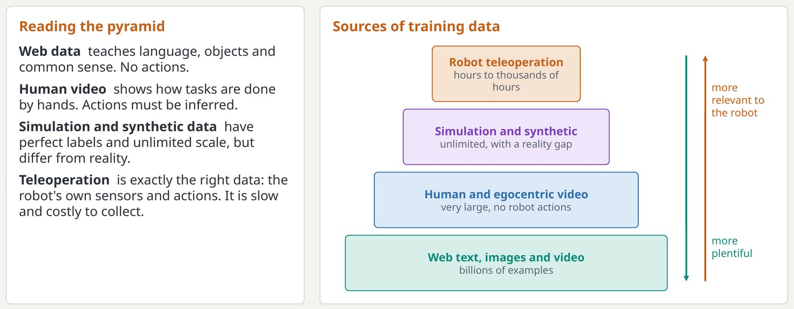
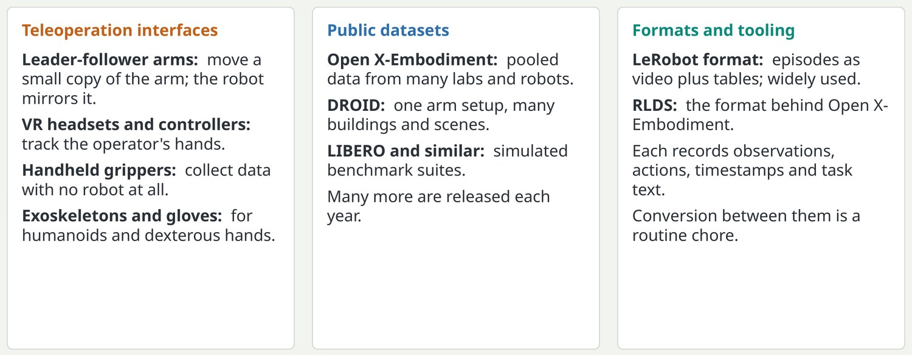
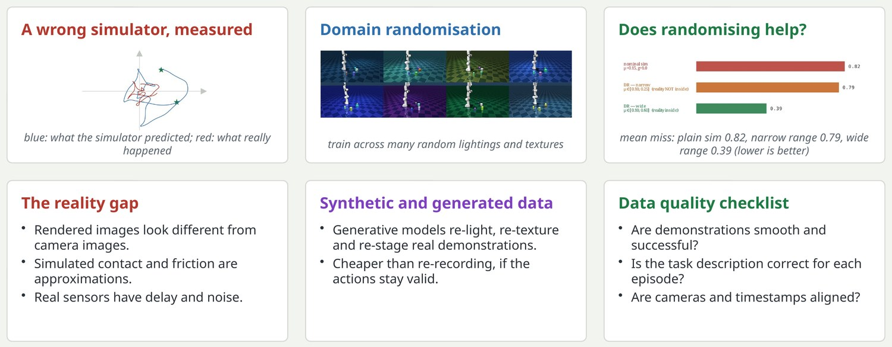

The data pyramid: plentiful at the bottom, relevant at the top
Robotics has no internet-scale dataset of robot actions, so models are built from layers of different data.

This framing is common in the field. Language models had the web; robots do not have an equivalent record of actions. Every current system is an answer to the question of how to combine these layers. Quantities are orders of magnitude only.
Key pointUse the cheap layers to learn about the world, and the expensive layer to learn how to act.
Collecting demonstrations and the datasets you will meet
How robot data is gathered, and the public collections and formats that have become standard.

Leader-follower setups such as ALOHA made bimanual data collection cheap and popular. Handheld devices like UMI let people collect manipulation data in the wild. On formats: the practical lesson is that half of the effort on a robot learning project is data plumbing, and most bugs live there.
Key pointKnow your dataset's cameras, action space and control rate before you train on it.
Simulation, the reality gap and data quality
Simulated data is cheap and perfectly labelled, but a policy trained only in simulation often fails on the real robot.

Sim-to-real is the problem of transferring from simulation to hardware. Domain randomisation varies textures, lighting, masses and friction during training so the real world looks like just another variation. It works well for locomotion and less well for contact-rich manipulation. Data quality: slow, hesitant or failed demonstrations teach the policy to be slow, hesitant and to fail.
Key pointMore data only helps if it is good data: consistent, varied and correctly labelled.